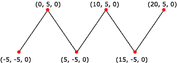

A line strip is a primitive that is composed of connected line segments. Your application can use line strips for creating polygons that are not closed. A closed polygon is a polygon whose last vertex is connected to its first vertex by a line segment. If your application makes polygons based on line strips, the vertices are not guaranteed to be coplanar.
The following illustration shows a rendered line strip.

The following code shows how to create vertices for this line strip.
struct CUSTOMVERTEX
{
float x,y,z;
};
CUSTOMVERTEX Vertices[] =
{
{-5.0, -5.0, 0.0},
{ 0.0, 5.0, 0.0},
{ 5.0, -5.0, 0.0},
{10.0, 5.0, 0.0},
{15.0, -5.0, 0.0},
{20.0, 5.0, 0.0}
};
The code example below shows how to render a line strip in Direct3D 9 using IDirect3DDevice9::DrawPrimitive .
//
// It is assumed that d3dDevice is a valid
// pointer to a IDirect3DDevice9 interface.
//
d3dDevice->DrawPrimitive( D3DPT_LINESTRIP, 0, 5 );
Â
Â